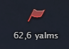
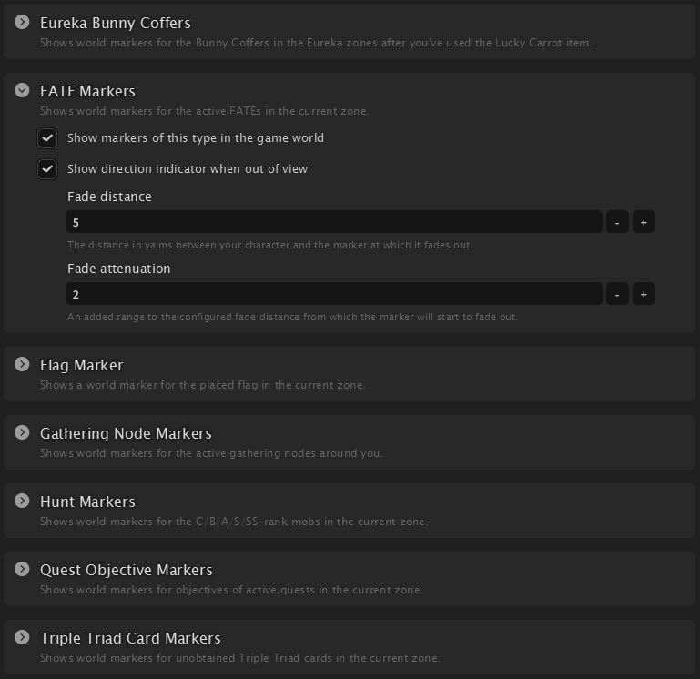
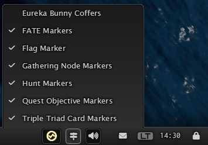

World Markers
 The second main feature of Umbra is the ability to place 3D world markers in the game world. These markers can be used to track quest objectives, gathering nodes, FATEs, and more, providing a visual reference for important locations. Similar to toolbar widgets, world markers are divided into categories and can be customized individually to suit your needs.
Customization
Open Umbra's settings window and head over to the World Markers tab. Here you can customize the
appearance and behavior of each of the world markers category to your liking.

Quick Access

Umbra offers a toolbar widget called "World Marker Control" that allows you to quickly enable or disable
world markers directly from the toolbar.
Using this widget, you can toggle the visibility of all world markers or individual categories with a single
click, instead of having to navigate through the settings window.
Do note that some world markers are only visible in the correct context. For example, gathering nodes will
only appear when you are in the correct gathering job, or Eureka Bunny Coffers will only appear after having
used the "Lucky Carrot" item in a Eureka zone.